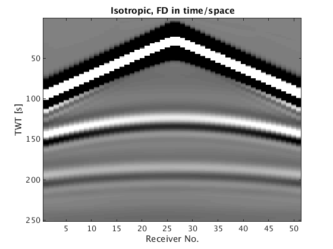
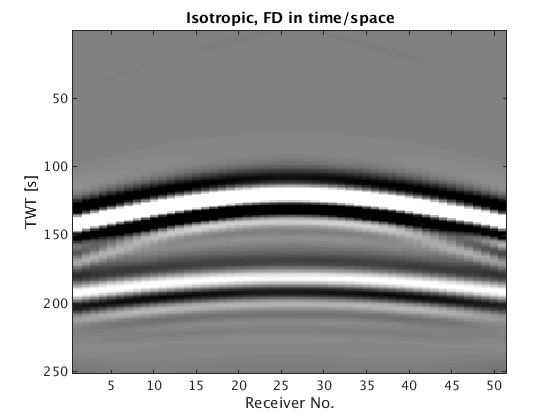

3D time-domain acoustic isotropic modelling and linearized modelling demo
The modeling operator is based on a star 1D stencil of order 2,4 or 6. It solves the system in parallel over sources . Source injection and receiver sampling is done via cubic interpolation and exponential damping over a 3x3 square around the source location. The Jacobian is derived by linearizing the discretized system and its forward and adjoint action is calculated via the adjoint-state method.
The basic syntax of the modeling operator is data = Gen_data(m,Q,model,density,anisotropy)|, where
- m is a vector with a gridded slowness-squared model [km^2/s^2],
- Q is a vectorof that defines the source,
- model is a struct with various other parameters,
- data is a vectorized data-cube (receiver x source x time),
- density is the density
- anisotropy are the thompsen parameters
ANISOTROPY IS NOT YET SUPPORTED IN 3D, ONLY ISOTROPIC.
We illustrate the basic modeling capabilities on a simple layered model.
Contents
medium parameterss
o = [0 0 0]; % Origin n = [50 50 50]; % Dimension N = prod(n); d = [15 15 15]; % Grid size v = ones(n)*1.400; % velocity [m/s] v(20:35,:,:) = 2.000; v(36:end,:,:) = 3.000; v = v(:); m=1./v.^2;
Model containing acquisition geometry and modelling parameters
model.o=o; %Origins of the axes [m] model.n=n; %Number of grid points for each dimension (excluding boundaries) model.d=d; model.ddcompx=2; % Domain decomposition x direction model.ddcompy=1; % Domain decomposition y direction model.ddcompz=1; % Domain decomposition z direction model.f0=0.010; % in [kHz] model.xsrc =375; model.zsrc= 10*ones(size(model.xsrc)); %Source coordinates along z axis [m] model.ysrc=375*ones(size(model.xsrc)); model.xrec = 0:15:750; model.zrec=10; %Receivers coordinates along z axis [m] model.yrec=0:30:750; %Receivers coordinates along y axis [m] model.T=1000; %Acquisition duration [ms] model.freesurface=0; % Freesurface ( 0 : no freesurface, 1 : freesurface) model.space_order=2; % Space discretization order (2 or 4 only for now) model.type='full'; model.gppwl = 5; % grid points per wave length (only for anisotropy) parpool(model.ddcompx*model.ddcompy*model.ddcompz); % Open parrallel pool for multiple domains %parpool(model.ddcompx*model.ddcompy*model.ddcompz+1); % Open parrallel pool for multiple domains in non-interactive session (one master + N domains)
Starting parallel pool (parpool) using the 'local' profile ... connected to 2 workers.
Acoustic isotropic modeling
[m1,model1]=Setup_CFL(m,model); model1.NyqT=0:4:model1.T; q=sp_RickerWavelet(model1.f0,1/model1.f0,model1.dt,model1.T); tic; dataT1=Gen_data(m1,model1,q); toc
CFL conditions gives dt = 2.4249ms and d = 14 14 14 m Velocity interpolated on new grid Lab 1: shot = 375 Acoustic isotropic Elapsed time is 32.938270 seconds.
Reshape and display results
dataT1=reshape(dataT1,length(model1.NyqT),length(model1.xrec),length(model1.yrec),length(model1.xsrc)); rec = 1:length(model1.xrec); tt = 1:model1.T/1000; figure(3); imagesc(rec,tt,dataT1(:,:,floor(length(model1.yrec)/2))); caxis([-1 1]);colormap(gray); title('Isotropic, FD in time/space'); xlabel('Receiver No.'); ylabel('TWT [s]')
Born modelling
The basic syntax of the Born modeling operator is du = Born(m,Q,model,din,mode,density,anisotropy)|, A more detailed documentation of the function will be added in a Time imaging section where
- m is a vector with a gridded slowness-squared model [km^2/s^2],
- Q is a vectorof that defines the source,
- model is a struct with various other parameters,
- mode 1 does Born modelling, -1 does RTM ,
- din is the model perturbation for mode=1 and data residual for mode=-1,
- du is a vectorized linearized data-cube (receiver x source x time),
- density is the density
- anisotropy are the thompsen parameters The last two parameters are optional too (elastic born modelling isn't implemented yet)
Smooth model
S = opKron(opSmooth(n(3),20),opSmooth(n(2),20),opSmooth(n(1),20)); %smoothing operator v0=S*v(:); m0=1./v0.^2; % Model perturbations dm=m-m0;
Linearized acoustic isotropic
You need to put dm in the Setup_CFL to project it on the new grid as well
[m1,model1,dm1]=Setup_CFL(m0,model,dm); model1.NyqT=0:4:model1.T; q=sp_RickerWavelet(model1.f0,1/model1.f0,model1.dt,model1.T); du1=Born(m1,model1,q,dm1,1); delete(gcp);
CFL conditions gives dt = 2.4249ms and d = 14 14 14 m Velocity interpolated on new grid Lab 1: J for shot 1 over 1 at position 375 Acoustic isotropic Parallel pool using the 'local' profile is shutting down.
Reshape and display results
du1=reshape(du1,length(model1.NyqT),length(model1.xrec),length(model1.yrec),length(model1.xsrc)); rec = 1:length(model1.xrec); tt = 1:model1.T/1000; figure(4); imagesc(rec,tt,du1(:,:,floor(length(model1.yrec)/2))); caxis([-5 5]*1e-1);colormap(gray); title('Isotropic, FD in time/space'); xlabel('Receiver No.'); ylabel('TWT [s]')